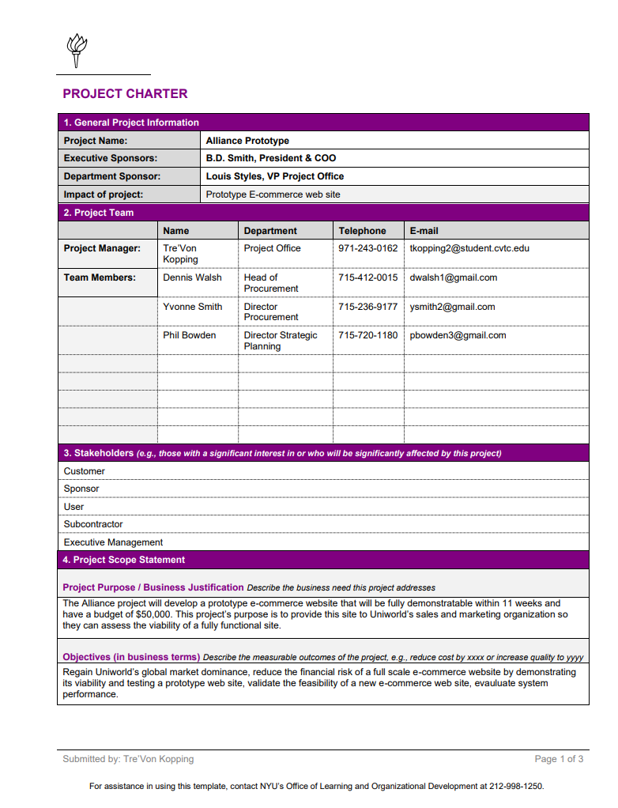
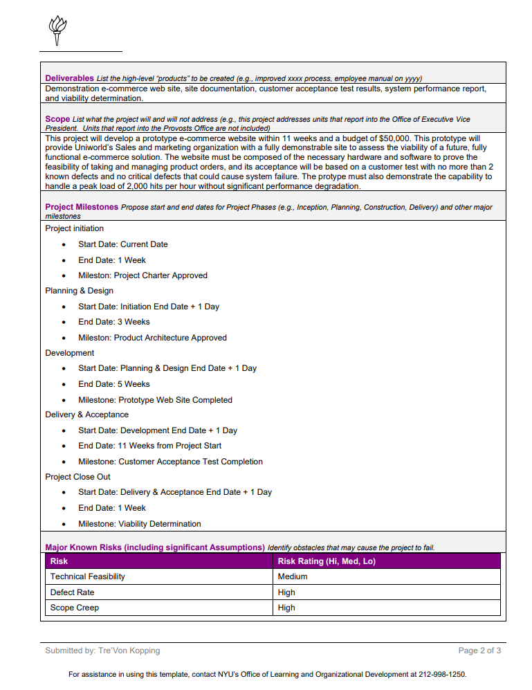
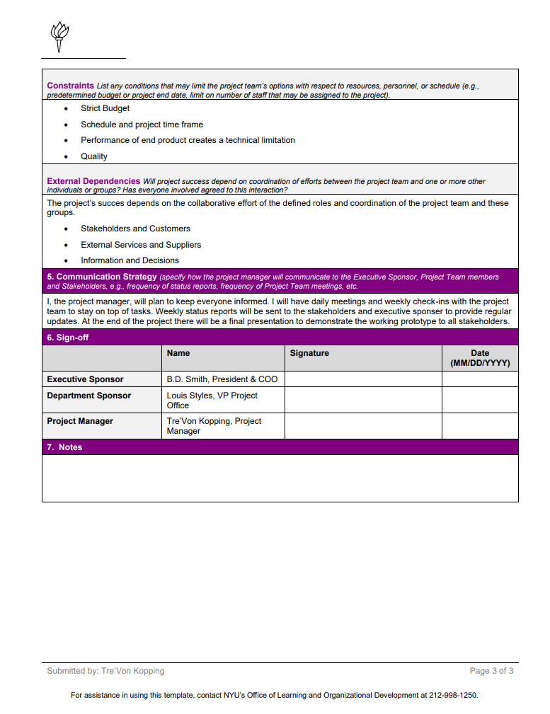
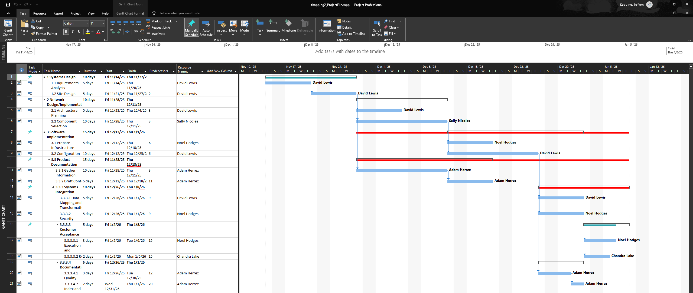
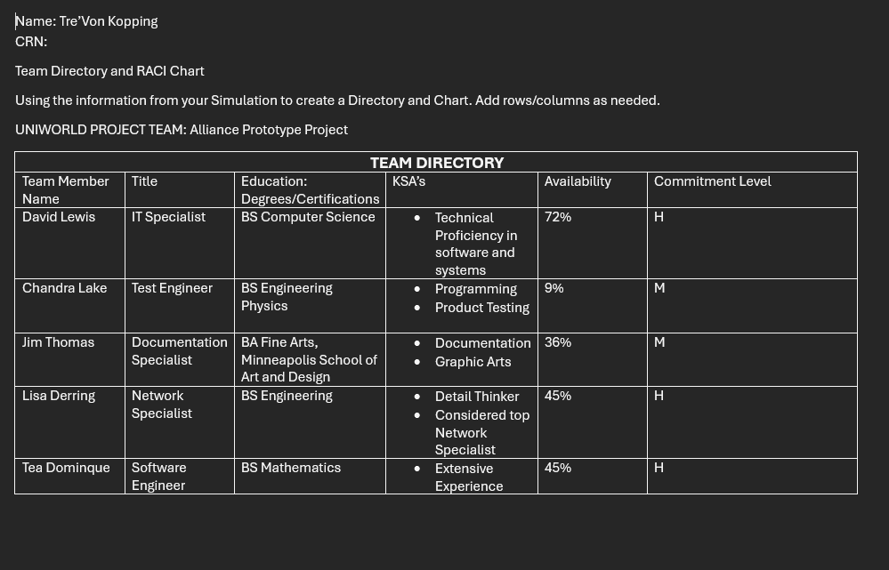
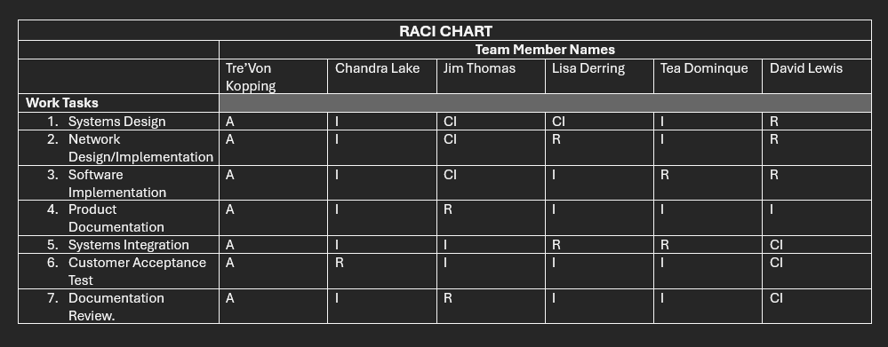

This course focuses on the leadership, organization, and strategic oversight of a project from the initial stages to its final report. Throughout this course, I learned to become a strategic leader and fully understand the Project Management Life Cycle. This covers everything from the initial project proposal and charter to the final analysis. This course involved using professional tools to build Work Breakdown Structures and identify the critical path, ensuring projects align with business strategy.
Exploring the roles of the Project Management Office (PMO) and the standards established by the Project Management Institute (PMI).
Understanding how the balance between scope, time, and cost impacts every management decision and project outcome.
Creating Work Breakdown Structures (WBS) to break down projects into manageable tasks, managing scope creep, and formalizing project change controls.
Created a project charter that defines the triple constraints and communication strategy for the project. This project charter also details risk management and the structured lifecycle planning from initiation to closing.



Utilized professional project software to create a Gantt chart showcasing the project schedule, tasks, timelines, dependencies, and progress.

Developed a Team Directory and RACI Chart that showcases the ability to manage technical teams and demonstrates organizational planning and resource allocation.

